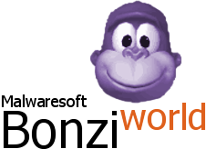

Goodbye...
Hey, ItzCrazySonicFan here.. I just want to say that i am permanetly quitting BonziWORLD.. I am not joking, this is for real this time! Actually real...Why?
I did everything i wanted for BonziWORLD. Unfortunately this server just became a wasteland for kiddies, and for flooders to attack it, and the whole BonziWORLD Community is just full of dramas or some other bullshit that i don't even want to deal with. And besides, i have found far better interests like Microsoft Agent Community and Piggy Community, which is just far better than BonziWORLD. The BonziWORLD Community is just full of dramas, and stress that i don't even bother dealing with. And users often beg me to resolve some floods i don't even know existed, and some other godword leaks. Like, it's your fault for leaking the godword to some skid named FunnySoda. Not mines, what am i even supposed to do? It's YOUR problem. And as far as BonziWORLD Community said, i was probably the best moderator in this wasteland, as i actually never banned some random Anonymouses for joining. Most of the moderators in this wasteland are just shit. And you know, Sticky was right! This whole community is just bullshit, and the server is a wasteland. I should have quitted a while ago! So yeah, that's pretty much why i will quit.Is BonziWORLD gonna shut down?
No, it is not going to shut down.Will you pay a visit sometime?
Sometimes, but rarely.Where can i chat with you after you quit?
You can friend me on Roblox (If you are age verified and are in the 13-15 age group), Bluesky, or subscribe to me on YouTube.What's gonna happen to BWIWORLD?
It's gonna be given to a new owner.Special Thanks to
RadicalGreen, JY, Izhan, Onantis, CrashyCrashy, UnrealNazar, Chrome/Cheese, Antadboi, Rowen, Nathan, etc.You guys are awesome! Especially you, who is reading this right now! I wish you guys the best future of your lives.. Anyways, goodbye.. :(